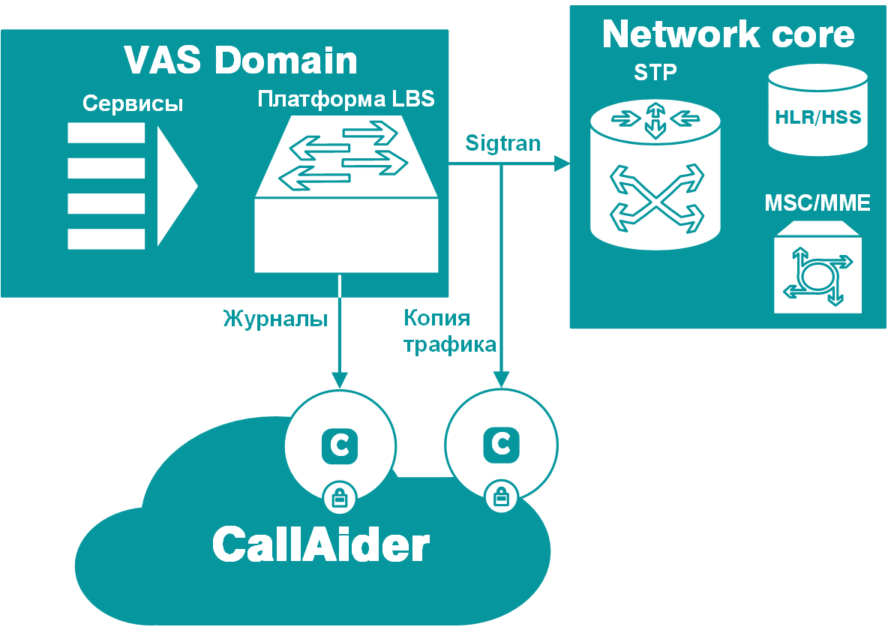

CEM платформа с обратной связью CallAider CX Feedback
Качество голосовой связи – наиболее важный для абонентов критерий выбора при подключении и при смене оператора.
CallAider CX Feedback предназначен для уменьшения оттока абонентов, индуцированного неудовлетворительным качеством реализации голосового сервиса.
CallAider CX Feedback эффективно решает задачи:
- Улучшения репутации оператора, так как абонент чувствует заботу
- Создания списков недовольных абонентов, которые не обращаются в службу тех. поддержки для принятия превентивных мер повышения лояльности
- Реализации дополнительного маркетингового канала взаимодействия с абонентом для целевых предложений
- Сокращения издержек на службу технической поддержки за счет уменьшения количества обращений абонентов
- Регистрация проблем всех абонентов, а не только тех, которые обратились в тех. поддержку
- В автоматических отчетах содержится вся необходимая информация: точное время, идентификторы базовых станциий, модель телефона абонента, последовательность действий абонента, и другие
- Полная статистическая картина проявления проблемы в сети оператора, с возможностью определения наиболее существенных причин
Решение CallAider CX Feedback обнаруживает проблемы голосового сервиса по паттернам поведения абонентов и отправляет абоненту USSD/SMS запрос для подтверждения проблемы. В случае подверждения наличия проблемы, CallAider CX Feedback автоматически формирует детализированный отчет о проблеме который может быть передан в службу тех. поддержки и отправляет абоненту сообщение, о том, что его проблема зарегистрирована.
Мониторинг SMS сервиса
Роль сервиса SMS - обмен сообщениями между абонентами, смещается в сторону систем оповещения и M2M взаимодействий, вместе с этим растут требования к качеству реализации сервиса.
CallAider детально отслеживает доставку каждого сообщения, формирует качественные характеристики, влияющие на общие показатели и анализирует поведение пользователей для пересечения подозрительной активности.
- Автоматическое обнаружение нелегальных способов использования сервиса SMS:
- для массовых рассылок сообщений - спам
- использование номера для систем мониторинга, оповещения или слежения
- работа вредоносного программного обеспечения на смартфонах абонентов
- Мониторинг качественных характеристик:
- процент доставленных сообщений
- среднее время доставки сообщения по каждому интерфейсу
- процент абонентов вне зоны действия сети для сервиса
- процент абонентов для которых сервис запрещен или недоступен
- процент доставки сообщений и время доставки для каждого
- Мониторинг количественных характеристик:
- суммарная нагрузка на сервис
- нагрузка на каждом коммутаторе оператора
- нагрузка на базовых станциях
- нагрузка на внешних и межрегиональных каналах связи
- интенсивность запросов к биллингу и Camel/PCEF сервисам
- Мониторинг состояния системы:
- контроль состояния сигнальных и IP подключений
- контроль времени отклика элементов сети оператора и внешних систем
- процент ошибок по каждому элементу
- Aудит - контроль своевременности а корректности формирования тарификационной информации
Для контроля качественных характеристик работы SMS сервиса, на коллекторы CallAider передается копия трафика SS7/SIGTRAN/SMPP/SIP/SMTP интерфейсов и CDR файлы.
Весь поток данных сетевого обмена и CDR сохраняется в Hadoop хранилище. Высокопроизводительные анализаторы CallAider мгновенно извлекают из полученных данных сессии, содержащие полный набор событий, которые произошли при доставке каждого сообщения. Группировка сессий по оборудованию, абонентам, и другим параметрам позволяют получить всесторонние количественные и качественные оценки работы сервиса.
Аналитический процессор выполняет группировку сессий по интерфейсам доставки, диапазонам номеров, результатам обработки и временным характеристикам для полного мониторинга и аудита работы SMSC оператора связи, формирует отчеты и показатели для внешних систем мониторинга.
Анализ поведения отправителей сообщений позволяет выявить тип использования сервиса SMS сервиса


Мониторинг платформы определения местоположения абонентов
Платформа определения местоположения абонентов LBS используется оператором сотовой связи для работы сервисов геолокации, таких как «Маячок», «Я-рядом», «Радар», «Навигатор», «Поиск» и другие.
Результатом использования CallAider оператором связи стало устранение 60.000 ошибок в сутки, возникающих из-за некорректной конфигурации платформы. Использование платформы CallAider инженерами оператора сократило время локализации проблемы c нескольких часов до десятков минут.
Для мониторинга качества работы сервиса используется копия сетевого трафика c интерфейсов серверов платформы и журналы (CDR) работы платформы
- Мониторинг качественных характеристик:
- процент ошибок, связанных с некорректной конфигурацией платформы
- процент алгоритмических ошибок работы платформы LBS
- процент абонентов, находящихся вне зоны действия сети для платформы LBS
- процент абонентов, для которых сервис запрещен
- время ответа элементов сигнальной сети оператора, с распределением по регионам
- Мониторинг количественных характеристик:
- интенсивность запросов от потребителей сервиса
- нагрузка, генерируемая платформой по элементам сигнальной сети оператора
- Мониторинг состояния системы:
- состояние сигнальных линков подключения платформы к сети оператора
- состояние IP интерфейсов на стороне подключения потребителей сервиса
- Аудит - контроль соответствия CDR платформы, реальному результатам обработки запросов
На сегодняшний день в 98% случаев сотовыми операторами используется метод определения местоположения - CID (Cell Identification),
в котором координата абонента вычисляется исходя из параметров базовой станции, которая обслуживает абонента в текущий момент.
При реализации этого алгоритма, платформа LBS взаимодействует с HLR оператора для определения коммутатор(ов) – MSC и SGSN,
на которых зарегистрирован абонент в голосовой сети и пакетной сети. Все взаимодействия в рамках определения местоположения могут
контролироваться в одной точке – непосредственно на серверах платформы LBS
Copyright ©2016 Atalas Inc. All Rights Reserved.